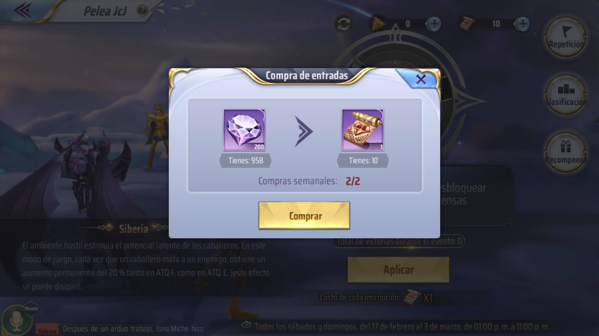
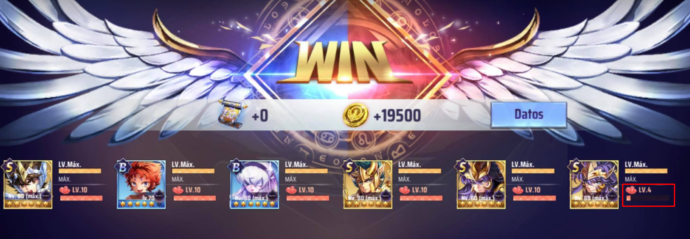
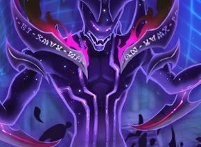
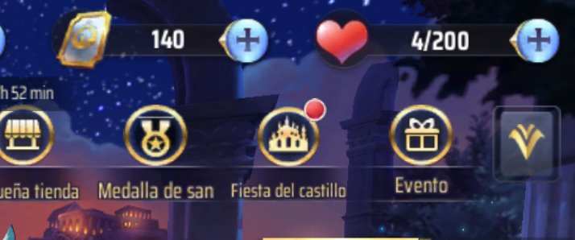
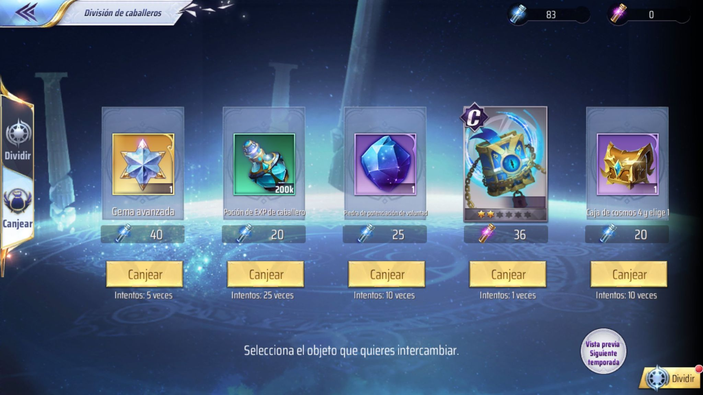
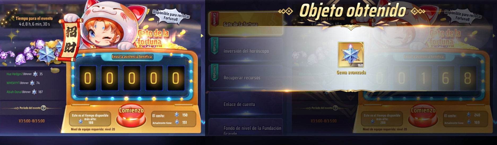
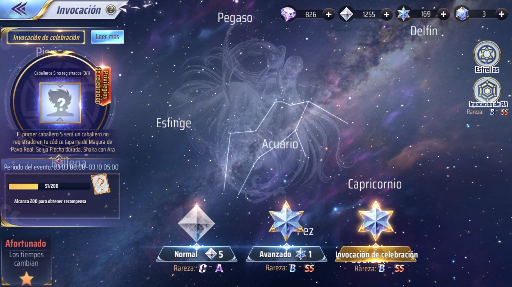
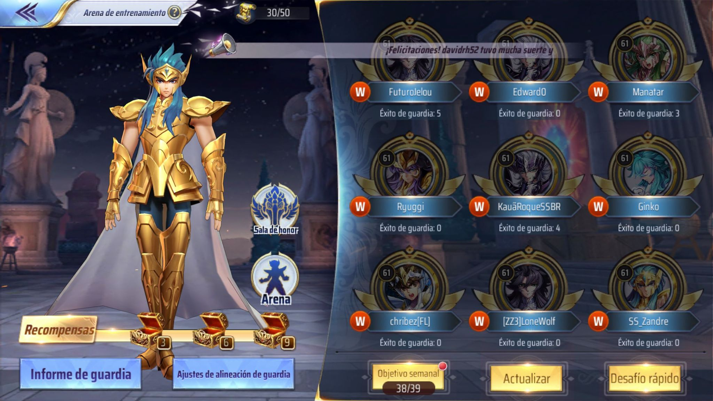

Pelea JcJ
En este modo de juego puedes ganar muchos diamantes y fragmentos de tomo de habilidad, compra tus boletos para pelear contra otros jugadores, pero si no tienes buenos personajes ahorralos, en ocaciones peleas contre el Alma de Poseidon y es mas facil ganar.
Subir Amistad
La forma más rapida de subir amistad de un personaje es colocando en tu alineacion a 5 personajes que ya tengas en nivel 10 de amistad y al que te intesera subir la amistad.
Luz estelar del Santuario
Ahorra este polvo, los fines de semana venden un cofre por 250 polvos que contiene un tomo de habilidad completo.
Vigor
No acumules vigor, si puedes gastatelo todos los dias, el viejo maestro de Campo de entrenamiento lo acumula si lo llevas al limite pero perderas algo de porcentaje de vigor por eso. GUIA COMPLETA DE VIGOR!! FARMEO Y USO OPTIMO!! - Androly San
División de caballeros
Cada semana puedes obtener 5 gemas si divides tus excesos de caballeros rango A o B.
Gato de la Fortuna
Cada primer lunes de cada mes sale este gato que te regala gemas de invocacion, ahorra para realizar este intercambio y tener mas posibilidades de obtener Caballeros S. Cuantas gemas me va a dar el gato? - Quantum Lex y Bolita Darroz
40 diarias
Para obtener al personaje que esta en el banner lo más adecuado es invocar 40 gemas diarias, ya que puedes obtener muchos fragmentos del personaje y así invocarlo. Consulta la guia de invocación.
Arena de Entrenamiento
Las derrotas de tu alineación de guarda no afectan de ninguna manera tu progreso en el juego. Cambia dicha alineación ubicando a los caballeros de niños o a personajes grado C. Si todos hacemos lo mismo, será fácil y rapido ganar las partidas en automático y completar las misiones.